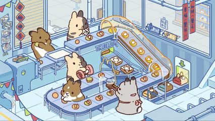

I am a master student of Robotics Department at University of Michigan (UMich), where I work on underwater robot digital twin with professor Katherine Skinner. Prior to that, I received my bachelor of science degree from University of North Carolina at Chapel Hill (UNC), double majoring in Physics and Applied Mathematics. Advised by professor Pedro Sáenz, I conducted natural science research on fluid mechanics and received training on hands-on engineering skills.
I am interested in synthetic data generation and closing sim2real gap for robot simulation, facilitating robot learning in virtual environment and minimizing deployment effort in real world. I am proficient in Isaac Sim\Lab with a focus on high-fidelity OpenUSD digital twin and GPU-accelerated computing. I am also a self-confessed geek for computer graphic and I am coding a raytracer from scratch.
04/2025 OceanSim is featured by NVIDIA Robotics!
04/2025 🔥 Beta version of OceanSim is released!
03/2025 🎉 OceanSim will be presented at AQ²UASIM and the late-breaking poster session at ICRA 2025!
12/2024 I have joined the Field Robotics Group at UMich Robotics.

Template from here